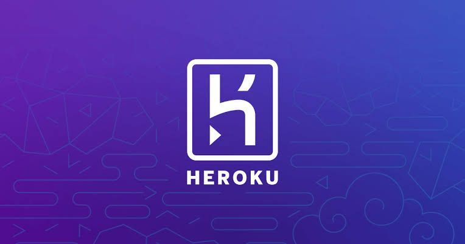
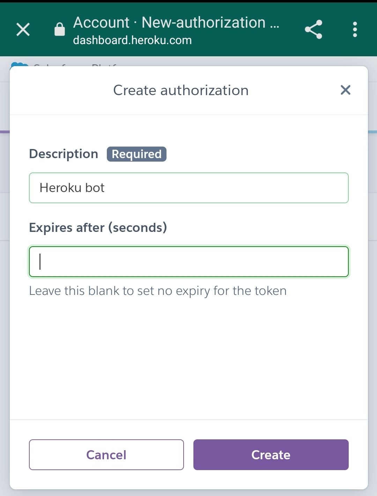
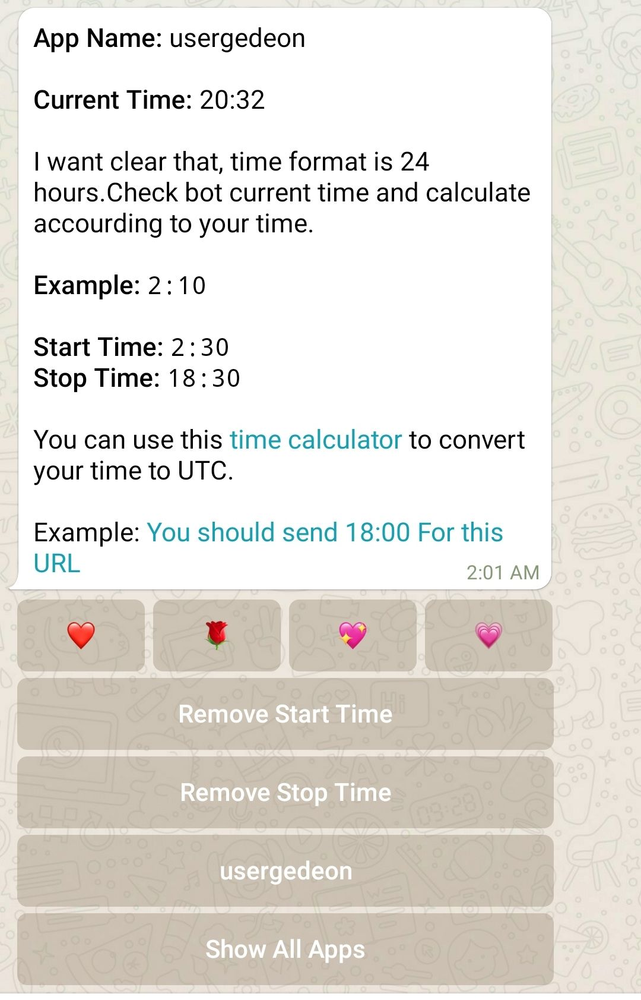
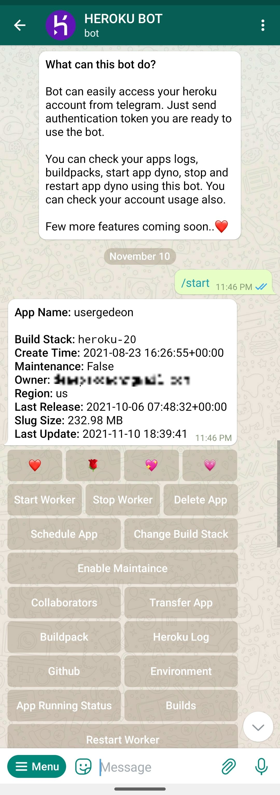

Heroku അക്കൗണ്ടിലെ free dynos 550hrs / month ആണെന്ന് അറിയാമല്ലോ...
അതായത് 550/24 = ഏകദേശം 23 ദിവസം.
അതുകൊണ്ട് തന്നെ userbot ഉൾപ്പെടെയുള്ളവ പലർക്കും മാസത്തിലെ അവസാനത്തെ ആഴ്ച ഉപയോഗിക്കാൻ കഴിയാറില്ല.
(ചിലർ ഒക്കെ Heroku app ownership change ചെയ്ത് run ചെയ്യിക്കാറുണ്ട്.)
Bots use ചെയ്യാത്ത സമയത്ത് Heroku worker turn off ചെയ്ത് dynos save ചെയ്യാൻ കഴിയുമെന്ന് നമുക്ക് അറിയാം. പക്ഷേ എപ്പോളും Heroku login ചെയ്ത് ഇത് toggle ചെയ്യുന്നത് ബുദ്ധിമുട്ടാണ് അല്ലേ...
എന്നാൽ ഈ കാര്യം manual ആയോ automatic ആയോ ഒരു Telegram Heroku Bot ന്റെ സഹായത്തോടെ remotely ചെയ്യാൻ കഴിയും.
For example: @HK_heroku_BOT
ആദ്യം തന്നെ bot open ചെയ്ത് Heroku അക്കൗണ്ട് authorize ചെയ്യുക.

Authorization token copy ചെയ്തെടുത്ത് bot ൽ paste ചെയ്താൽ bot & heroku account connect ആവും.
ശേഷം ബോട്ടിൽ വരുന്ന ബട്ടൺ മെനുവിൽ നിന്നും schedule ഓപ്ഷൻ എടുത്ത് അതിൽ start time ഉം end time ഉം കൊടുത്താൽ daily ആ സമയത്ത് heroku worker automatically off/on ആയിക്കോളും.

Time UTC ൽ ആണ് കൊടുക്കേണ്ടത്. സ്ക്രീന്ഷോട്ടിൽ Start time 2:30 (12a.m IST) ഉം End time 18:30 (8a.m IST) ഉം ആണ് ഞാൻ കൊടുത്തിരിക്കുന്നത്.
So, per day 8 മണിക്കൂർ save ആവുന്നുണ്ട്.
After 23 days, 23 × 8 = 184 hrs
Which is enough for 7 days month end ig.
Meths yeppedi mwonuse 🤣🤙
മാത്രമല്ല, ഈ ബോട്ട് വഴി worker toggle ചെയ്യാനും, collaborator add ചെയ്യാനും transfer ചെയ്യാനും, logs check ചെയ്യാനും, environment vars manage ചെയ്യാനും ഒക്കെ കഴിയും. (ഒന്നിലധികം heroku accounts ഉള്ളവർക്ക് എല്ലാത്തിലും ഒരു common collaborator add ചെയ്തിട്ട് ആ account വഴി അതിലെ എല്ലാ bots ഉം manage ചെയ്യാം.)

- @DeonWrites -
• ടെലഗ്രാമിനെക്കുറിച്ച് കൂടുതൽ വായിക്കാം...